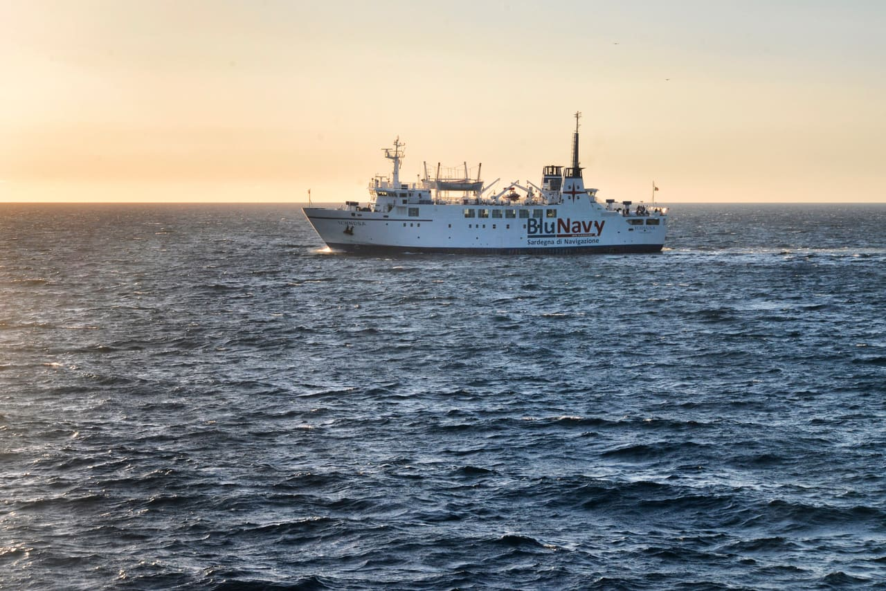
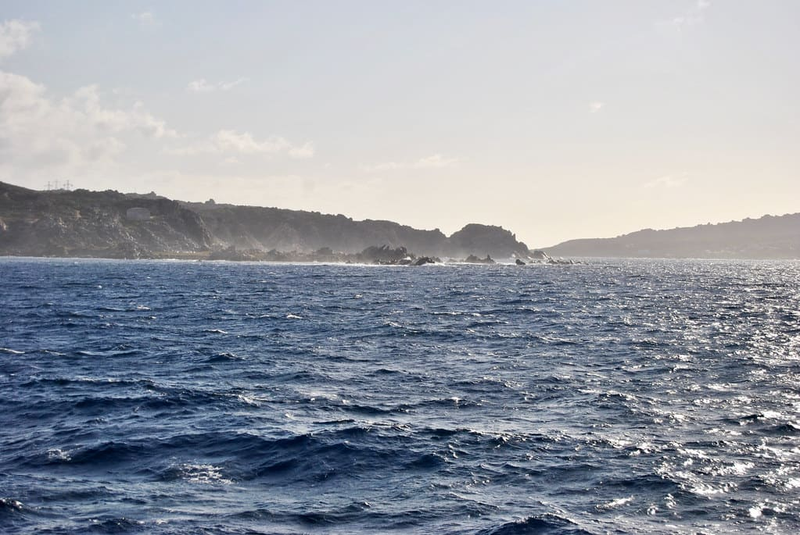
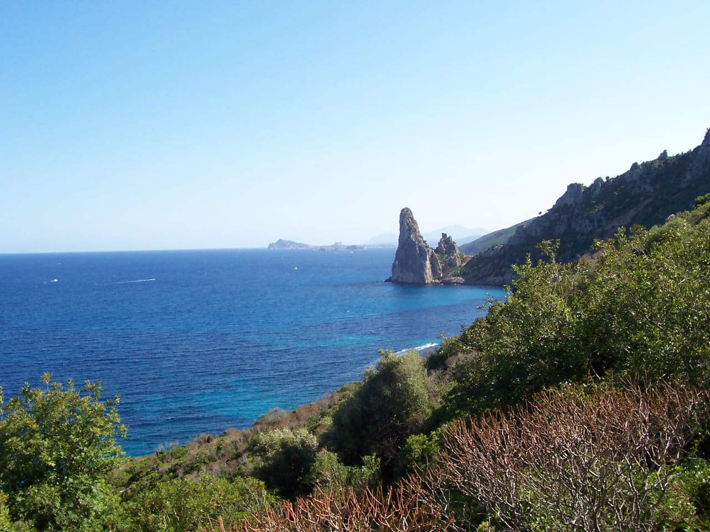
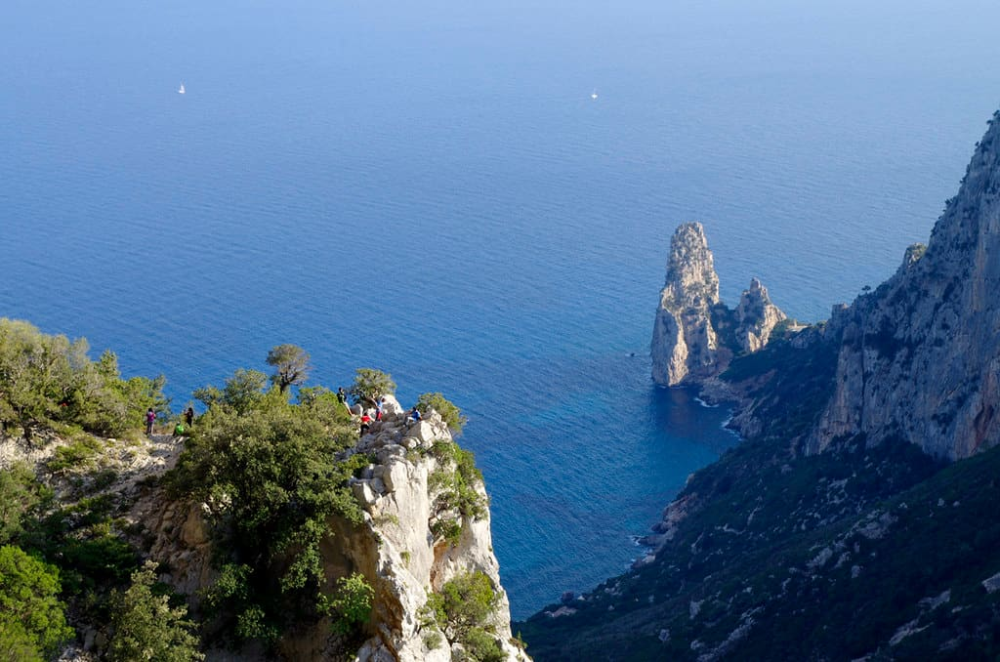
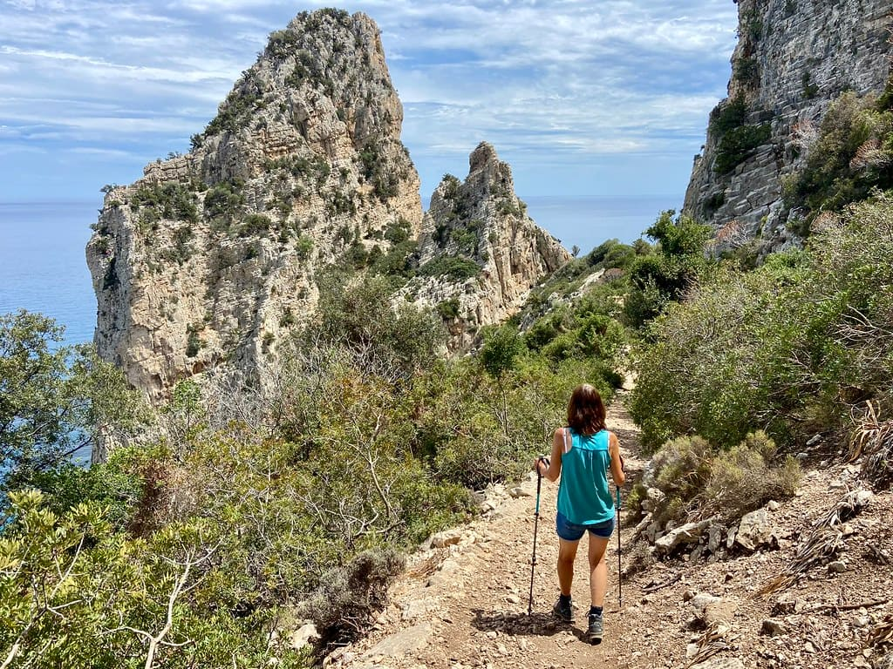
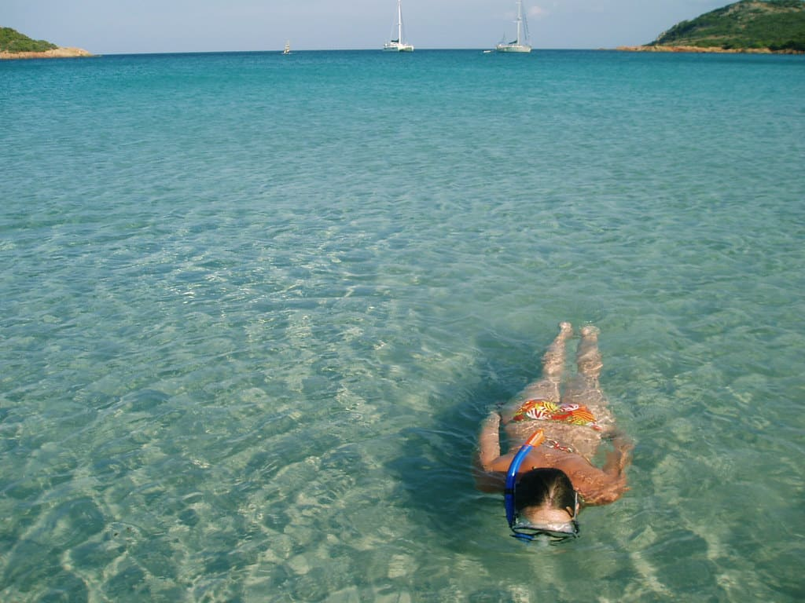
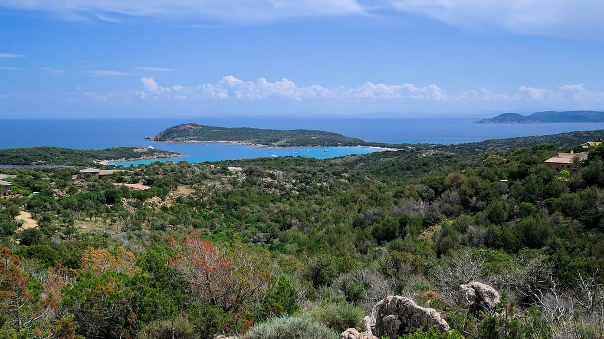
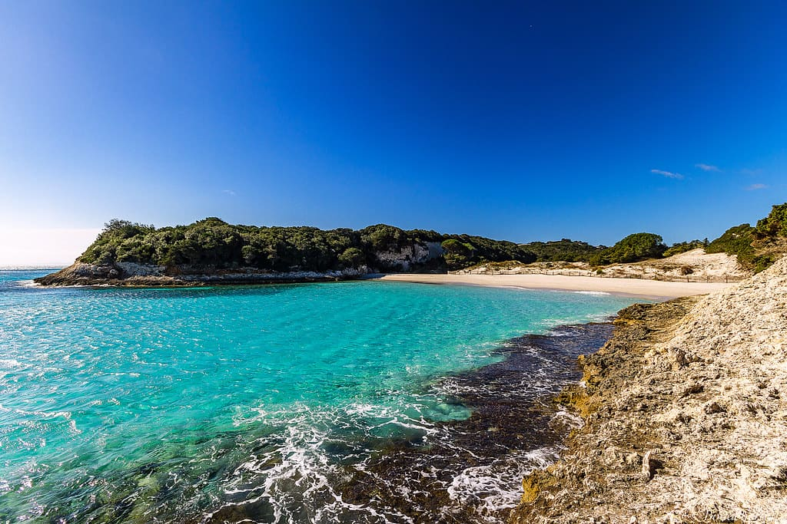

7 nights
Sardinia
Use the reviewed source leg’s preferred base pattern; property selection remains open.
A complete draft assembled from reviewed Sardinia and Corsica destination legs, with the transfer, calendar, budget, and score recalculated for this pairing.
↓ Full day-by-day plan below














The Plan at a Glance
The route, timing, cost, and appeal score below are recomputed for this composed pairing.
Route
ferry transfer; 1 planning hours.
Lodging split
Sardinia, then Corsica.
Rough all-in
Family-of-four deterministic planning range; live quotes are not yet audited.
Appeal
Budget remains double-weighted; PTO remains displayed at weight zero.
The Case for This Route
The destination-local strengths are inherited from reviewed source legs; the combined verdict remains provisional.
Family Highlights
Specific favorites have not been independently tested for this exact pairing.
The source legs contain family-oriented activities, but this composed route still needs a deliberate age-by-age favorites review.
Where We Stay
Base counts and night allocations are composer outputs; exact properties are not selected.
Use the reviewed source leg’s preferred base pattern; property selection remains open.
Use the reviewed source leg’s preferred base pattern; property selection remains open.
Calendar
Dates are generated from the canonical night and blackout model.
Depart
Evening departure model.
Return
Before the 6/24/2027–6/26/2027 Pittsburgh blackout.
Calendar
11 hotel nights.
PTO
Weekdays excluding observed Juneteenth.
Day by Day
Destination days are verified-source content. Transfer boundaries, dates, costs, and the combined ordering remain estimated.
Sun - 6/6/2027
Overnight travel
Airport meals and ground transport
Confirm a protected 2027 itinerary
Mon - 6/7/2027
Arrival + first swim
Est. ~$120 · groceries + casual dinner
Best arrival airport is Olbia or Alghero if fares cooperate; Cagliari works but adds a long first-day drive.
Old town free; ramparts walk free; gelato/snacks €12-25 family; parking €1-2/hr near the port.
79°F day / 64°F night. Sea 72-73°F — the key fix vs Portugal: warm enough for real kid swims in sheltered bays.
Family & picky-kid eats
Tue - 6/8/2027
Cliffs, cave, beach reset
Est. ~$190 · cave + meals
Do the cave early, then make the afternoon about water. If the sea is rough, use the stair route or skip the cave and beach-hop.
Viewpoints free. Neptune's Grotto: roughly €14 adult / €10 child plus boat or 654-step Escala del Cabirol.
79°F day / 64°F night. Sea 72-73°F — pleasant in sheltered coves, but the cave itself is not a swim stop.
Family & picky-kid eats
Wed - 6/9/2027
Big north-coast beach or colorful town
Est. ~$150 · permits/parking + meals
La Pelosa is the north-coast swim card. Book the slot once 2027 rules open; bring required mats under towels.
Timed-entry beach rules usually run June-Oct: cap around 1,500/day, ticket about €3.50 pp age 12+, mat under towels required; parking extra.
79°F day / 64°F night. Sea 72-73°F — shallow turquoise water is one of the best kid-swim setups in north Sardinia.
Family & picky-kid eats
Thu - 6/10/2027
Transfer + cliff-meets-sea arrival
Est. ~$190 · ferry + fuel + dinner
This is the biggest road day after the ferry. Keep the stop simple: Pedra Longa views, pizza dinner, early bed.
Free viewpoint/swim rocks; parking usually free/low cost. Short walks rather than committing to Selvaggio Blu.
81°F day / 66°F night. Sea 73-75°F — east coast water is the swim payoff the Portugal Atlantic could not deliver.
Family & picky-kid eats
Fri - 6/11/2027
Signature hike + real swim
Est. ~$130 · permits + meals
This is the hardest day in the plan. Moving one day earlier keeps the same weather band, but it makes the early start even more important for heat and kid patience.
2026-style rules: book ahead via Heart of Sardinia; typical hike ticket €7 pp, daily cap around 250, trail opens 7:30 and closes 14:00; beach stay until late afternoon.
81°F day / 66°F night. Sea 73-75°F — clear and swimmable, but the hike out is hot; start early with the 8-year-old.
Family & picky-kid eats
Sat - 6/12/2027
Peak water day
Est. ~$360 · boat + meals
Book a smaller boat from Santa Maria Navarrese or Arbatax and confirm which beaches require landing reservations under 2027 rules.
Shared boat from Arbatax/Santa Maria Navarrese often €45-75 pp; beach landing/access QR rules apply to regulated Baunei beaches.
81°F day / 66°F night. Sea 73-75°F — best water day of the route; bring water shoes for pebbles.
Family & picky-kid eats
Sun - 6/13/2027
Nature without overcooking the kids
Est. ~$140 · short hike + meals
Keep this easier than a full Selvaggio Blu-adjacent day. Heat and cliff exposure matter more than mileage.
Gorropu access commonly ~€6 pp; jeep shuttles extra. For kids, do a shorter canyon-edge version, not an all-day sufferfest.
82°F day / 65°F night. Sea 73-75°F — not a swim stop; pair with a late pool or Santa Maria Navarrese beach reset.
Family & picky-kid eats
Mon - 6/14/2027
Ferry transfer
Transfer included in sardinia->corsica budget
Return the first car if required, cross by ferry, collect the next car, and keep the arrival evening light.
Tue - 6/15/2027
Corsica swim day
Est. ~$220 · beach transport/boat + meals
Without a Corsica rental, use taxi/boat and stay focused. If renting locally, book early; supply near Bonifacio is thin.
Beach free; parking often €5-10/day in season; taxi or short rental car day if staying car-free.
78°F day / 63°F night. Sea 72-74°F — sheltered water and pale sand make this the Corsica kid-swim day.
Family & picky-kid eats
Wed - 6/16/2027
Weather and energy buffer
Flexible
Keep this day open for weather, rest, or a favorite Corsica repeat.
Thu - 6/17/2027
Weather and energy buffer
Flexible
Keep this day open for weather, rest, or a favorite Corsica repeat.
Fri - 6/18/2027
Return flight
Airport meals and transfers
Confirm a protected 2027 itinerary
Sat - 6/19/2027
Trip complete
—
Keep the next full day protected in Pittsburgh.
The Whole Trip, Mapped
Map points are inherited from reviewed source legs; transfer routing remains estimated.
Air Travel
The transfer shape is useful planning information; exact 2027 inventory is not confirmed.
Outbound
Protected gateway itinerary required.
Mid-trip
Confirm the 2027 ferry day, vehicle rules, and port check-in window.
Return
Protected gateway itinerary required.
Getting Around
Local transport assumptions are inherited from leg budgets, but the exact handoffs need review.
First leg
Local transport allowance included in the itemized budget.
Handoff
Confirm baggage, vehicle, and ticket protection rules.
Second leg
Local transport allowance included in the itemized budget.
Entry & Documents
Country-specific entry, driving, health, and connectivity rules have not been merged for this pairing.
Complete the combined-country passport, ETIAS, driving-permit, insurance, medical, money, and connectivity review before booking.
Plan Health-Check
The composer validates structure; a human booking-readiness audit is still outstanding.
Best Time
The blackout constraint is verified; destination-level weather fit has not been re-audited for the exact sequence.
Compare the exact dates against heat, wind, sea temperature, closures, ferry calendars, and destination events for both legs.
Before You Go
The composed route does not yet have a booking calendar.
Build a dated booking order after the flights, transfer edge, lodging bases, and cancellation strategy are audited.
The Money
All rows are deterministic rollups from leg ranges and the selected transfer edge.
| Line item | Estimate (family of 4) |
|---|---|
| Sardinia lodging | $1,260–$2,030 |
| Sardinia car/local transport | $520–$800 |
| Sardinia food | $1,200–$1,640 |
| Sardinia activities | $550–$1,000 |
| Mid-trip transfer | $250–$550 |
| Corsica lodging | $760–$1,240 |
| Corsica car/local transport | $350–$550 |
| Corsica food | $775–$1,050 |
| Corsica activities | $350–$700 |
| PIT outbound gateway | $2,800–$4,200 |
| PIT return gateway | $2,800–$4,200 |
Bottom Line
This planning range is not a live quote.
| Category | Estimate (family of 4) |
|---|---|
| All itemized composer rows | $11,615–$17,960 |
| Grand total — family of 4 | $11,615–$17,960 |
Re-quote every component before booking. A low Budget score is a warning, never an exclusion.
Travel Tips
Local tips exist in the source legs, but they have not been reconciled into one combination-level booking guide.
Merge the strongest operational notes from both source trips, remove conflicts, and add transfer-specific failure plans.
Packing
Packing tags are inherited from both source legs; the final consolidated list is not audited.
Combine the family baseline with weather, hiking, water, driving, and destination-specific gear requirements for this exact route.
Trip Balance
The split is inferred from leg variety tags rather than audited day categorization.
Decisions
Structural choices are settled; booking choices are not.
Photo Guide
Source imagery is present, but the combined route has no date-specific light plan.
Build sunrise, sunset, blue-hour, access, lens, and weather-backup guidance for every scheduled flagship location.
Food Guide
Restaurant notes exist inside source spots, but the route-wide dining plan is incomplete.
Reconcile current restaurants, grocery access, picky-eater fallbacks, reservation needs, and remote-day food logistics.
Recommendation Readiness
The /50 score describes estimated family appeal; it does not certify a future schedule or live quote.
Deterministically derived from composer hints and rubrics.
Exact 2027 service remains unverified.
Source legs are reviewed; this combination is not.
$11,615–$17,960 planning band.
Recommendation Evidence
No combination-level evidence ledger has been created.
Attach current sources and confidence grades to every score axis, transfer claim, climate claim, and cost proxy.
Trip Variants
Only the canonical composed pair is generated in v1.
Review shorter-night allocations, alternate gateways, and fallback transfer edges before publishing variants.
What People Are Saying
Insider field notes Unverified
No combination-level crowd-source review has been completed.
Review current traveler reports for both legs and the exact transfer, then preserve only actionable, date-relevant advice.